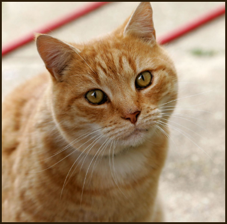

O nas

Co roku do schronisk trafiają dziesiątki tysięcy zwierząt - psy, koty, króliki, szczury..
Jedne odebrane z interwencji, inne zagubione czy porzucone.
Nasza aplikacja webowa powstała, aby wspomóc schroniska, w szybszym znalezionu domów dla podobiecznych.
W jednym miejscu zjednoczyliśmy zwierzęta, poszukujące domu z całej Polski,
aby każdy znalazł w sposób łatwy i szybki nowego przyjaciela.
Okaż serce i pomóż. Zwierzęta czekają na nową, kochającą rodzinę !
Okaż serce i pomóż. Zwierzęta czekają na nową, kochającą rodzinę !
Nowi podopieczni